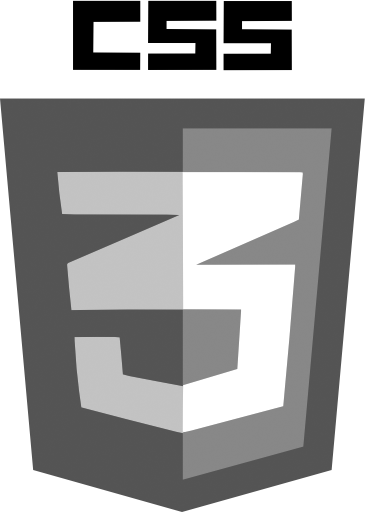
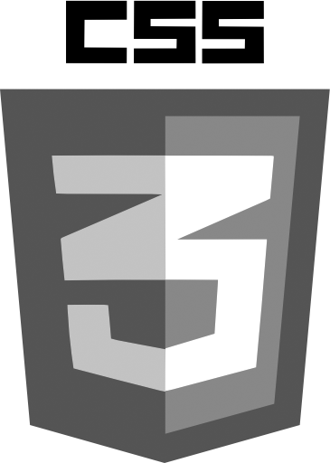

My Work
Skills
 



Side Projects
Self Studying HTML, CSS & JavaScript
I have been studying HTML & CSS in depth through the informative guides made by Shaye Howe and web-developement project website, Dash. Along side, I have been studying JavaScript for future projects and use of JQuery. Besides coding my personal website from scratch, here are other pages I have coded:
To view source code for these projects, check out my Github!